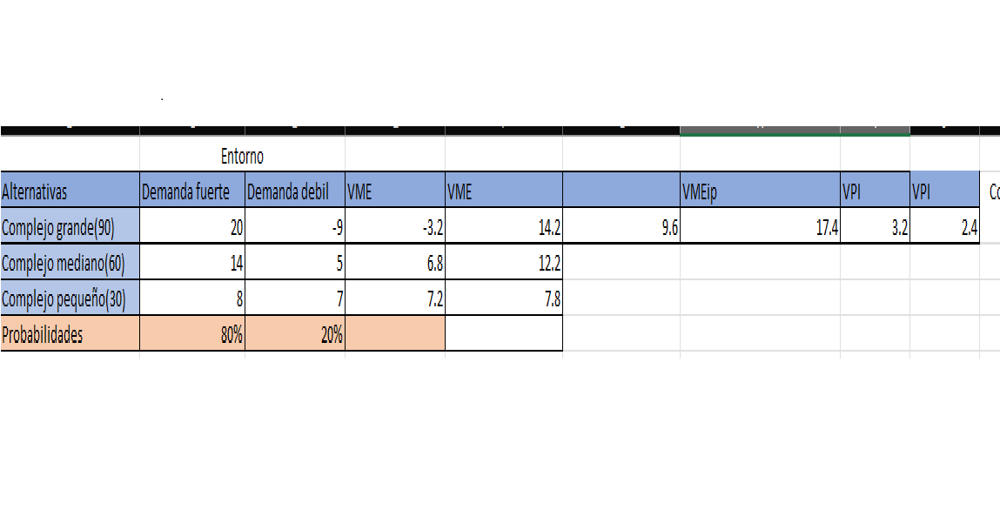
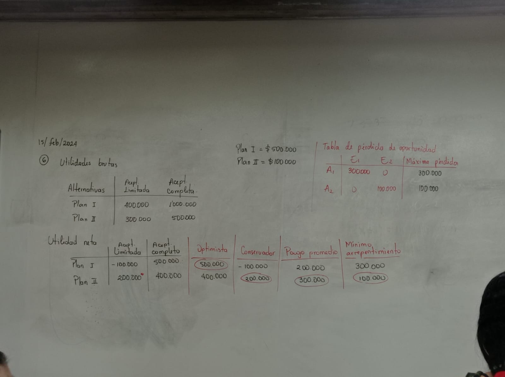
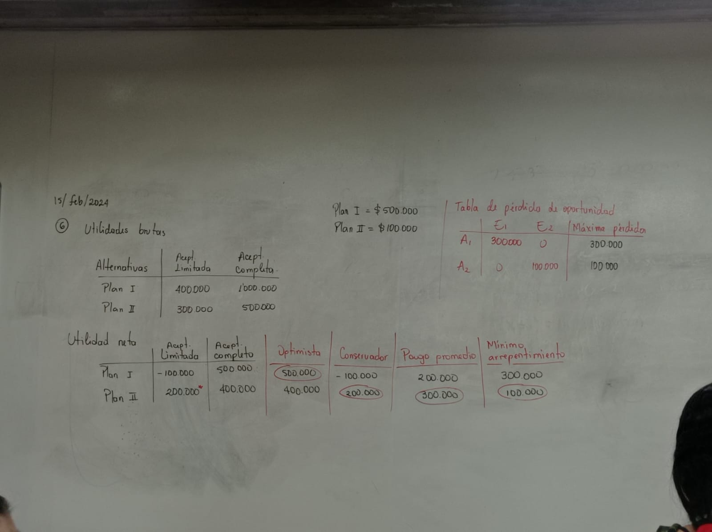
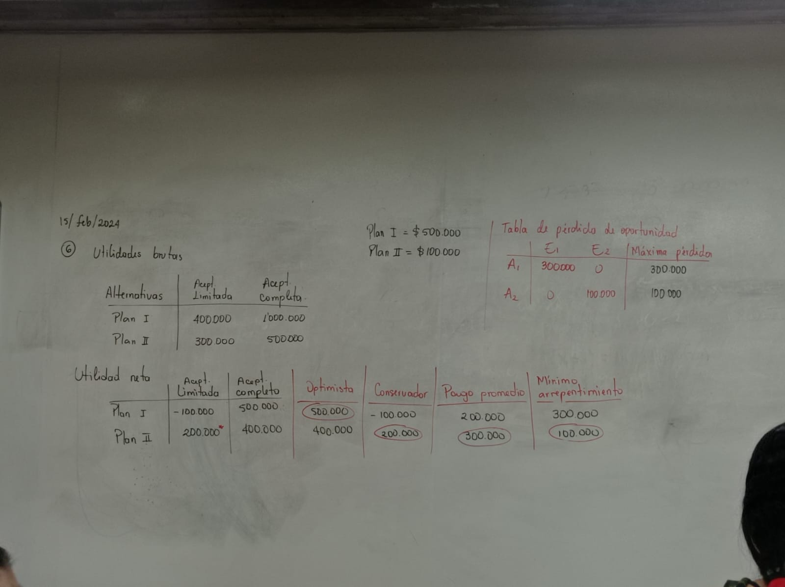

la toma de desiciones es el preceso de elegir un conjuntos de posibles alternativas, para esto se debe definir un problema, indentificar las posibles alternativas
exito o fracaso
dificles y complejas
miedo,ansiedadmdudas
decisiones apresuradas
En esta materia se va a evaluar cada uno de estos factores
como proceder?
Definir el problema
enumerar las posibles alternativas
indentificar los posibles escenarios o estados de la naturaleza
obtencion de resultados y valoracion de estos
prediccion de probabilidades de cada estado
indentificar el tipo de desicione
desiciones estaticas
desiciones secuenciales
indentificar el contexto en el que se toma la desicion
incertidumbre
riego
certeza
Tipos de desiciones
tipos de desiciones bajo certidumbre: existe solo un resultado para la desicion
Toma de desiciones sin datos previos(incertidumbre)
toma de desiciones utilizando datos previos(probabilidades)
modelos de tomas de desiciones

Actividad
Esribir una situaciones en la que tome una desiciones con sus posibles alternativas y posibles escenarios externos que influyan en la desicion
Solucion: Aprender a programar/ alternativas/ PY,JAVASCRIPT,C/Gustos de sintaxis y mejores mercados respecto al lenguaje
Modelos de toma de decisiones sin datos previos
enfoque optimista
enfoque conservador
Pago promedio
Minimizacion del arrepentimiento
en esta tabla se realizo un analisis en la cual la universidad debia elegir que carrera deberia abrir con diferentes escenarios, se realizaron diferentes enfoques y el hallazgo de pago promedio
ultima ta
Actividad
punto 2 y 3 de las carpetas de tomas de decisiones
Ejercicios realizados en clase

En el enfoque optimista se eligio 500.000 del plan 1 ya que es la utilidad mayor
En el enfoque conservador se eligio 400.000 de el plan 2 ya que la utilidad que genera es la mejor de las peores
Pago promedio
Modelos de toma de desiciones con riesgo
Valor Monetario esperado (VME)
(Alternativa 1 Entorno1*probabilidad de E1)+(Alternativa 1 Entorno2*probabilidad de E2)
Esto explica que sin informacion adicional el valor esperado es el resultado de esta formula
Valor monetario esperado con informacion perfecto(VMEip)
(Utilidad mas alta en estado de naturaleza 1* probabilidad de E1)+(Utilidad mas alta en estado de naturaleza 2*probabilidad de E2)
Esto explica que con informacon adicional el valor esperado es el resultado de esta formula
Valor de la informacion perfecta(VPI)
VMEip-VME
Con esta formula Sabremos la diferencia entre tener Informacion y no tenerla, bajo este resultado tomaremos una desicion
Ejemplo de estos modelos
Actividad
Ejercicio 4 de la pagina 133 del capitulo 4 de toma de desiciones libro: Metodos cuantitativos para los negocios
20/02/2024
Analisis de riesgo
Si "p" es la probabilidad de una demanda fuerte,
"1-p" es la probabilidad de una demanda debil
Valor esperado Grande
VEg= 20p-9(1-p)
VEg= 29p-9
Valor esperado mediano
VEm= 14p+5(1-p)
VEm= 9p+5
Valor esperado pequeño
VEp= 8p+7(1-p)
VEp= 1p+7
modelos de transporte
Fase 1: hallar Solucion factible inicial
Fase 2: mejoramiento de la solucion hasta llegar a la solucion optima
Metodo del costo mínimo
Se utiliza para hallar la solucion factible inicial. Asignar la mayor cantidad de oferta/demanda en la celda de menor costo y asi sucesivamente
¿Cómo calcular índice de mejoramiento
Pasos
Paso 1: formular la tabla inicial del transporte
Paso 2: emplear el método del costo mínimo para encontrar una solucion factble inciial
Paso 3: Calcular el índice de mejoramiento(IM) para cada celda que no tenga asignacion
SI los IM>= 0, el problema es óptimo
Si los IM(<) 0, no es óptimo y se debe continuar con el paso IV
Paso 4: para la celda sin asignacion con el IM mas negativo, se determina la celda del circuito con signo negativo que tenga la menor asignacion; este es el valor que se emplea para una nueva asignacion, se suma este valor a las celdas del circuito que tengan signo positivo y se resta a las que tengan signo negativo
Celdas vaciasíndice(I,M)
Modelos de asignacion
Metodo de solucion: Metodo hungar
Paso. Reduccion por filas: a todos los elementos de la fila se le resta el menor elemento de la fila
Paso. Reduccion por columnas: a todos los elementos de la fla
Paso. Prueba de optimalidad: trasar el menor numero de lineas que cubran la mayor cantidad de ceros. Si el numero de lineas es menor que el numero de filas se dice que la solución no es optima, entoncs pasamos al 4to paso
paso. Reducciones posteriores: entre las casillas que quedaron libres, tome el menor valor y restelo al resto de las casillas libres, y se suma a las casillas que estan en el intercepto de las rectas. Volver a hacer la prueba de optimalidad
Paso. Asignar los agentes en las casillas de ceros
Ejercicio:
una universidad nombra a cuatro profesores para dirigir cuatro proyectos de grados. En la siguiente tabla se muestran los tiempos que cada docente se demora en cada proyecto segun su experiencia. Si a cada profesor se le debe de asignar un proyecto, a quien se le debe asignar cada uno de ellos minimizando el tiempo
Modelos PERT/CPM
se utiliza para planear, programar y controlar varios proyectos:
¿Cual es el tiempo total para completar el proyecto
¿cuales son las fechas de inicio y terminacion programadas de cada actividad especifica?.
¿Cuales actividades son "criticas" y deben ser completadas exactamente como se programaron para mantener el proyecto dentro del programa?
¿que tanto se pueden demorar las actividades "no criticas" antes de que incremente el tiempo total de terminacion del proyecto?
Paso 1: identificar actividades o tareas asociasdas con el proyecto
Paso 2: Calcular o estimar cuanto tiempo tomara cada actividadd
Paso 3: Identificar cual tarea es mas importante y ordenarlas en orden decendiente del abecedario
Paso 4
: Establecer la red desde la actividad inicial hasta la final:


 
